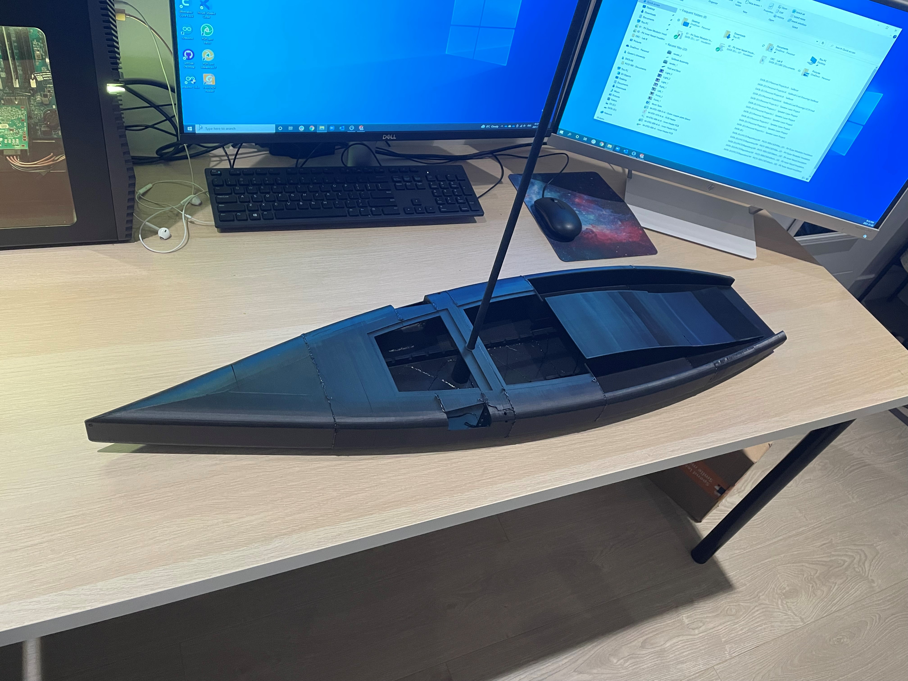
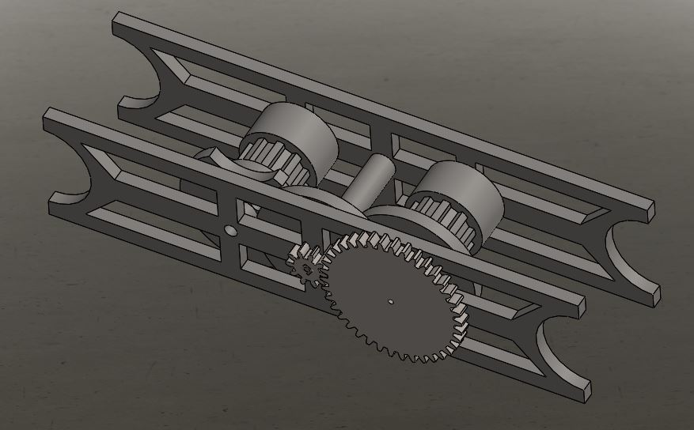

Hydrofoiling Sailboat

The America Cup for sailing has evolved substantially over the years. The boats have become significantly faster and begun to rely on technology to remain competitive. After seeing the new AC75 boat designs from the 36th America’s cup, I wanted to design my own mini AC75 RC boat. The very interesting and difficult aspect of this new boat design is that it is a hydro-foiling sailboat with a monohull, meaning its less stable once in the air. Here is a video showing the boats in action.
I designed a 1-meter-long CAD model of the sailboat and 3D printed it; files linked Here. The idea behind this model was to get an accurate idea of weight as well as play around with designs for the control surfaces. One of the larger constraints of this project is weight, both in distribution and quantity. To keep the boat light, a Geneve gear is used to control the position of the front two hydrofoils with a single servo motor. Using a gear system like this also allows for the full servo range to be utilized and geared properly.
 I have 3D printed the haul and have started to play around with the Geneve gear mechanisms. I also have a mast, which will be trimmed down after the amount of sail area is finalized. The system will contain a RC receiver as well as 3 servos. The boat will have pitch and yaw control from the rudder and be stabilized from the front 2 hydrofoils. The initial size and shape of the foils was calculated using NACA calculator. The front two foils each had a cord length of 10mm and a leading edge length of 32mm. The back rudder/foil had a cord length of 12mm leading edge length of 35mm. A low-speed ULM airfoil was chosen because it is both easy to design and fabricate but also optimal for slow speeds.